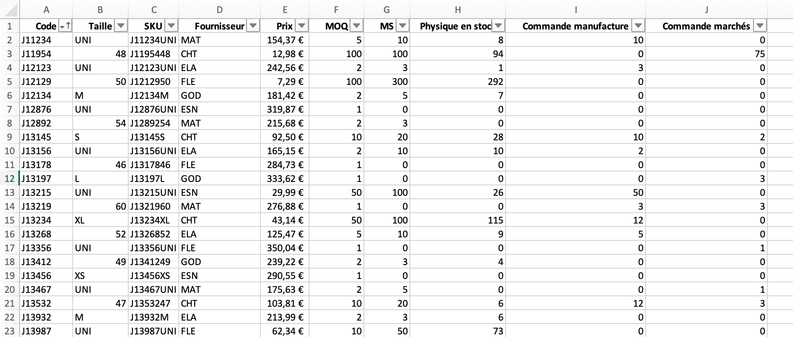

Utilisation de Python pour l'automatisation d'un processus création de bons de commande
- POK
- 2024-2025
- temps 1
- Python
- Charles Cook
Création d'un outils en Python permettant d'automatiser la création de bons de commande.
Aucun prérequis
Les lien utiles pour la compréhension de celui-ci.
Au cours de mon stage de césure en tant qu'assistant supply planner, une tâche redondante et chronophage était le passage des commande mensuelles. L'objectif de ce processus est de, à partir de l'état actuel des stocks, les commandes en cours et les minimum stock, créer un bon de commande par manufacture.
- le niveau et les prérequis nécessaires en utilisant la balise
prerequis - les autres POK & MON en rapport en utilisant la balise
lien
Tâches
Sprints
L'objectif de ce POK est la création automatisée de bon de commande par manufacture à partir de de l'état des stocks actuels, regroupant, par référence et taille, la quantité souhaitées, le prix unitaire ainsi que le prix du lot commandé, et la date de livraison souhaitée.
Sprint 1
Liste des taches que l'on pense faire. On coche si la tache est réalisée. A la fin du sprint on fait une petite étude post-mortem pour voir ce qui s'est passé et les ajustement à faire pour le prochain sprint, pok.
- [x] (Re)Découverte du langage Python
- [x] Création d'une base de données fictive
- [x] Déterminantion de la forme de l'outil
- [ ] Création d'une première version du code
Sprint 2
- [ ] Amélioration du code
- [ ] Mise en forme de l'interface utilisateur
- [ ] Complexification du modèle
Horodatage
| Date | Heures passées | Indications |
|---|---|---|
| Vendredi 13/09 | 2H | (Re)Découverte du langage Python |
| Lundi 16/09 | 2H | (Re)Découverte du langage Python |
| Lundi 16/09 | 1H | Création de la base de données fictive |
| Lundi 16/09 | 2H | Début du code |
| Mardi 17/09 | 1H | Suite code |
| Mercredi 18/09 | 2H | 1ère version des feuilles propositions de commande |
Sommaire
- Présnetation de l'outil
- Point d'avancement au premier Sprint
Présentation de l'outil :
Cet outil à pour but de répondre à plusieurs objectifs utilisateur :
- L'utilisateur doit pouvoir consulter les quantités de commande recommandées par manufacture,
- L'utilisateur doit pouvoir modifier/valider ces quantités,
- Les bons de commande doivent être générés automatiquement à parti des quantités modifiées/validées.
Point d'avancement au premier Sprint
Remise à niveau Python
Pour cette partie de remise à niveau, je me suis appuyé sur le site Automate Boring Stuff With Python
Travailler avec des feuilles Excel
Il est possible de travailler sur Python à partir de classeurs Excel. Pour cela, il faut importer la librairie openpyxl.
Ouvrir un classeur Excel
La fonction openpyxl.load_workbook() permet de charger un classeur Excel. Une fois que celui-ci est chargé, nous pouvons accéder à son contenu et le manipuler ou le modifier.
Il est important de noter que si le fichier contient des formules, il est parfois préférable de lire les valeurs calculées au lieu de lire les formules entrées dans les cellules. Dans ce cas, on précise à l'aide de l'option data_only=True. Ainsi, pour ouvrir le fichier Exemple en utilisant les valeurs calculée, on rédige le code suivant :
import openpyxl
wb = openpyxl.load_workbook('Exemple.xsl',data_only=True)
De même, si l'on ne souhaite pas faire de modification sur le classeur Excel, il existe l'option read_only=True permettant de l'ouvrir en lecture seule, ce qui est plus rapide :
import openpyxl
wb = openpyxl.load_workbook('Exemple.xsl',read_only=True)
Manipuler les feuilles
Une fois le classeur chargé, il est possible d'accéder aux feuilles qui le composent :
import openpyxl
wb = openpyxl.load_workbook('Exemple.xsl',data_only=True)
# Obtenir les noms de feuilles composant le classeur
wb.sheetnames
# Accéder à une feuille par son nom
ws = wb['NameSheet']
# Obtenir le nom d'une feuille comme un type *String*
Nom_feuille = ws.title
Manipuler les cellules
On peut séléctionner et obtenir la valuer d'une cellule grâce à ses coordonnées :
import openpyxl
wb = openpyxl.load_workbook('Exemple.xsl',data_only=True)
ws = wb['NameSheet']
# Accéder à la cellule A1
Cell = ws['A1']
# Obtenir la valeur, la colonne et la ligne de la cellule A1
Cell.value, Cell.column, Cell.row
Dimensionner un tableau
Il est possible d'obtenir les dimensions d'un tableau en utilisant les attribut max.rowet max.column qui renvoient respectivmement le numéro de la dernière ligne et de la dernière colonne.
Manipuler lignes et colonnes
Il est possible de séletionner des lignes ou des colonnes d'un coup :
import openpyxl
wb = openpyxl.load_workbook('Exemple.xsl',data_only=True)
ws = wb['NameSheet']
# Sélectionner toutes les cellules de A7 à B9
tuple(ws['A7':'B9'])
Créer un classeur Excel
Nous pouvons créer un nouveau classeur Excel avec la fonction openpyxl.Workbook(). Par défaut, le classeur Excel créé est vide et contient une seule feuille nommé Sheet.
import openpyxl
# Créer un nouveau classeur
wb = openpyxl.Workbook()
Pour renommer le classeur ou la feuille, il suffit d'utiliser les attributs vus précédemment.
Créer ou supprimer une feuille
On peut manipuler le nombre de feuilles dans un claseur en en créant ou en en suppimant. Ainsi :
import openpyxl
wb = open.pyxl.Workbook()
# Ajouter une nouvelle feuille intitulé "Base de données" en première position
wb.create_sheet(index=0,title='Base de données')
# Supprimer la feuille "Sheet"
del wb['Sheet']
Tous ces éléments nous seront utiles pour automatiser la création des bons de commande.
Création d'une base de données fictive
Order Review
L'objectif de ce POK est d'automatiser la création de bons de commande à partir de l'état actuel des stocks. Ainsi, pour simuler cet exercice il est nécessaire de créer une base de données fictive refletant le niveau de stock. Cette bas de donnée doit contenir les éléments suivants :
- Le code rédérence de chaque produit.
- La taille de chaque produit. Nous faisons ici l'hypothèse que les produits considérés ont des tailles, et que les niveaux de stocks sont donc indépendants en fonction de la taille.
- Les SKU. Il s'agit d'un code unique au niveau référence taille.
- Le fournisseur. L'objectif est de créer un fichier par fournisseur, il est donc nécessaire de rensigner le fournisseur chargé de la production de chaque référence.
- Le prix.
- Le MOQ (Minimum Order Quantity). Le prix auquel est acheté une référence auprès du fournisseur dépend de la taille de lot, plus celle-ci est grande, plus le fournisseur peut proposer un prix faibleà l'unité. Ainsi, une taille de lot minimale (MOQ) est décidée afin de garantir le prix, et toutes les commandes passées doivent être supérieures au MOQ.
- Le MS (Minimum Stock). Il s'agit du seuil qui déclenche automatiquement une nouvelle commande afin d'éviter la rupture de stock.
- Le physique en stock. Il s'agit du stock central physique.
- Commandes manufacture. Il s'agit des commandes passées pour le stock central, mais qui n'ont pas encore été livré. Ces quantités n'apparaissent donc pas encore dans le physique disponible.
- Commandes marchés. Il s'agit des commandes passées par les différents marchés et qui n'ont pas encore été expédiées.

Lead Time
Les bons de commande contiennent également une date de livraison demandée. Cette date de livraison dépend du fournisseur, une seconde feuille dans le classeur recense donc Lead Time en fonction du fournisseur (en mois).
Calcul des quantités recommandées
Les quantités de commande recommandées sont calculés comme suit :
-
On caclul dans un premier temps le physique disponible. Il s'agit du physique en stock, auquel on ajoute les quantités commandées à la manufacture, et on retranche les quantités commandées par les marchés. Ainsi : Physique Dispo = Physique Stock + Commande Manuf - Commande Marchés
-
Si Physique Dispo >= MS , alors Quantité Recommandée = 0
-
Si Physiue Dispo < MS alors Quantité Recommandée = MS - Physique Dispo
1ère version des feuilles de propositions de commande
Le code suivant permet de créer, à partir de la base de données évoquée précédemment, une feuille par manufacture listant l'ensemble des références nécéssitant une commande auprès de la manufacture, et donnant la quantité de commande recommandée pour chacune des références.
Création et mise en page des feuilles de proposition de commande
import openpyxl
wb = openpyxl.load_workbook('/Users/charlescook/Desktop/DO IT/BD POK 1.xlsx',data_only=True)
indice_max = wb['Order Review'].max_row
# Création des feuilles proposition pour chaque manufacture
wb.create_sheet(title='Proposition CHT')
wb.create_sheet(title='Proposition ELA')
wb.create_sheet(title='Proposition ESN')
wb.create_sheet(title='Proposition FLE')
wb.create_sheet(title='Proposition GOD')
wb.create_sheet(title='Proposition MAT')
# Introduction des variables
indice_CHT=2
indice_ELA=2
indice_ESN=2
indice_FLE=2
indice_GOD=2
indice_MAT=2
# Mise en place des en-têtes pour les feuilles propositions
for k in range(1,11):
wb['Proposition CHT'].cell(row=1,column=k).value=wb['Order Review'].cell(row=1,column=k).value
wb['Proposition ELA'].cell(row=1,column=k).value=wb['Order Review'].cell(row=1,column=k).value
wb['Proposition ESN'].cell(row=1,column=k).value=wb['Order Review'].cell(row=1,column=k).value
wb['Proposition FLE'].cell(row=1,column=k).value=wb['Order Review'].cell(row=1,column=k).value
wb['Proposition GOD'].cell(row=1,column=k).value=wb['Order Review'].cell(row=1,column=k).value
wb['Proposition MAT'].cell(row=1,column=k).value=wb['Order Review'].cell(row=1,column=k).value
wb['Proposition CHT'].cell(row=1,column=11).value='Quantité Recommandée'
wb['Proposition CHT'].cell(row=1,column=12).value='Quantité Corrigée'
wb['Proposition ELA'].cell(row=1,column=11).value='Quantité Recommandée'
wb['Proposition ELA'].cell(row=1,column=12).value='Quantité Corrigée'
wb['Proposition ESN'].cell(row=1,column=11).value='Quantité Recommandée'
wb['Proposition ESN'].cell(row=1,column=12).value='Quantité Corrigée'
wb['Proposition FLE'].cell(row=1,column=11).value='Quantité Recommandée'
wb['Proposition FLE'].cell(row=1,column=12).value='Quantité Corrigée'
wb['Proposition GOD'].cell(row=1,column=11).value='Quantité Recommandée'
wb['Proposition GOD'].cell(row=1,column=12).value='Quantité Corrigée'
wb['Proposition MAT'].cell(row=1,column=11).value='Quantité Recommandée'
wb['Proposition MAT'].cell(row=1,column=12).value='Quantité Corrigée'
Ce code permet de créer une feuille par manufacture et la création des en-têtes.
Calcul de la quantité de commande recommandée par référence
for i in range(2,indice_max+1):
Physique_Stock = wb['Order Review'].cell(row=i,column=8).value
Commande_Manuf = wb['Order Review'].cell(row=i,column=9).value
Commande_Marche = wb['Order Review'].cell(row=i,column=10).value
MS = wb['Order Review'].cell(row=i,column=7).value
MOQ = wb['Order Review'].cell(row=i,column=6).value
Manufacture = wb['Order Review'].cell(row=i,column=4).value
Physique_Dispo = Physique_Stock + Commande_Manuf - Commande_Marche
if MS>Physique_Dispo :
R_Qty = MS - Physique_Dispo
if R_Qty<MOQ :
R_Qty = MOQ
else :
R_Qty = 0
R_Qty est la quantité de commande recommandée, qui est nulle si il n'y a pas besoin de commander des pièces, et qui est supérieure ou égale au MOQ (Minimum Order Quantity) si il y a un besoin.
Extraction des refs ayant un besoin et trie par manufacture
# Copie des refs à commander dans des feuilles séparées par manufacture
if R_Qty>0 and Manufacture == 'CHT':
for j in range(1,11):
wb['Proposition CHT'].cell(row=indice_CHT,column=j).value=wb['Order Review'].cell(row=i,column=j).value
wb['Proposition CHT'].cell(row=indice_CHT,column=11).value=R_Qty
indice_CHT=indice_CHT+1
if R_Qty>0 and Manufacture == 'ELA':
for j in range(1,11):
wb['Proposition ELA'].cell(row=indice_ELA,column=j).value=wb['Order Review'].cell(row=i,column=j).value
wb['Proposition ELA'].cell(row=indice_ELA,column=11).value=R_Qty
indice_ELA=indice_ELA+1
if R_Qty>0 and Manufacture == 'ESN':
for j in range(1,11):
wb['Proposition ESN'].cell(row=indice_ESN,column=j).value=wb['Order Review'].cell(row=i,column=j).value
wb['Proposition ESN'].cell(row=indice_ESN,column=11).value=R_Qty
indice_ESN=indice_ESN+1
if R_Qty>0 and Manufacture == 'FLE':
for j in range(1,11):
wb['Proposition FLE'].cell(row=indice_FLE,column=j).value=wb['Order Review'].cell(row=i,column=j).value
wb['Proposition FLE'].cell(row=indice_FLE,column=11).value=R_Qty
indice_FLE=indice_FLE+1
if R_Qty>0 and Manufacture == 'GOD':
for j in range(1,11):
wb['Proposition GOD'].cell(row=indice_GOD,column=j).value=wb['Order Review'].cell(row=i,column=j).value
wb['Proposition GOD'].cell(row=indice_GOD,column=11).value=R_Qty
indice_GOD=indice_GOD+1
if R_Qty>0 and Manufacture == 'MAT':
for j in range(1,11):
wb['Proposition MAT'].cell(row=indice_MAT,column=j).value=wb['Order Review'].cell(row=i,column=j).value
wb['Proposition MAT'].cell(row=indice_MAT,column=11).value=R_Qty
indice_MAT=indice_MAT+1
wb.save('/Users/charlescook/Desktop/DO IT/fichier_modifié.xlsx')
Ce code permet d'obtenir une feuille par manufacture qui permet de une order review par l'utilisateur chargé du processus de la commande mensuelle.

Pistes d'amélioration du code
Il est possible d'améliorer le code en mettant en place un code couleur en fonction de l'importance de la commande, si cette commande résulte d'un besoin marché (un besoin client), la ligne pourrait être en rouge afin de souligner son importance. C'est une piste à étudier en second sprint.